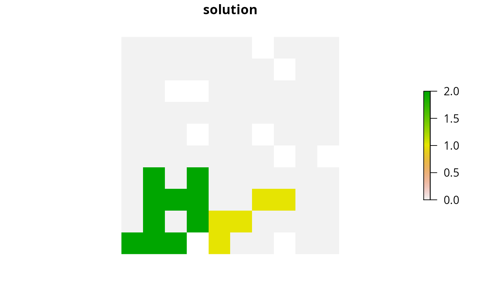
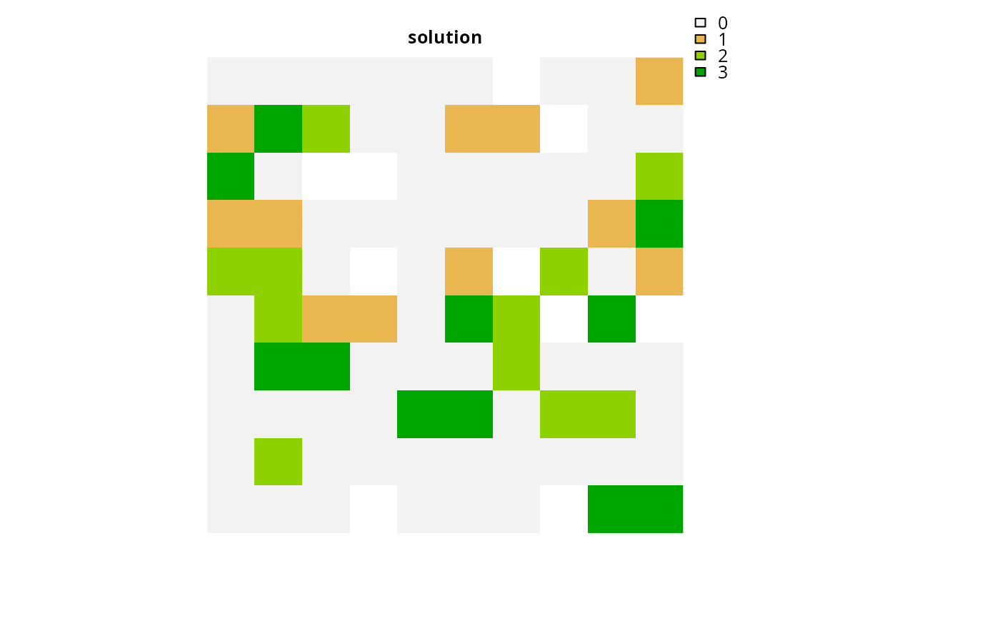

R/add_min_shortfall_objective.R
add_min_shortfall_objective.RdSet the objective of a conservation planning problem() to
minimize the shortfall for as many targets as possible while ensuring that
the cost of the solution does not exceed a budget.
add_min_shortfall_objective(x, budget)
| x |
|
|---|---|
| budget |
|
Object (i.e. ConservationProblem) with the objective
added to it.
A problem objective is used to specify the overall goal of the conservation planning problem. Please note that all conservation planning problems formulated in the prioritizr package require the addition of objectives---failing to do so will return an error message when attempting to solve problem.
The minimum shortfall representation objective aims to
find the set of planning units that minimize the shortfall for the
representation targets---that is, the fraction of each target that
remains unmet---for as many features as possible while staying within a
fixed budget (inspired by Table 1, equation IV, Arponen et al.
2005). Additionally, weights can be used
to favor the representation of certain features over other features (see
add_feature_weights().
The minimum shortfall objective for the reserve design problem can be expressed mathematically for a set of planning units (\(I\) indexed by \(i\)) and a set of features (\(J\) indexed by \(j\)) as:
$$\mathit{Minimize} \space \sum_{j = 1}^{J} w_j \frac{y_j}{t_j} \\ \mathit{subject \space to} \\ \sum_{i = 1}^{I} x_i r_{ij} + y_j \geq t_j \forall j \in J \\ \sum_{i = 1}^{I} x_i c_i \leq B$$
Here, \(x_i\) is the decisions variable (e.g.
specifying whether planning unit \(i\) has been selected (1) or not
(0)), \(r_{ij}\) is the amount of feature \(j\) in planning
unit \(i\), \(t_j\) is the representation target for feature
\(j\), \(y_j\) denotes the representation shortfall for
the target \(t_j\) for feature \(j\), and \(w_j\) is the
weight for feature \(j\) (defaults to 1 for all features; see
add_feature_weights() to specify weights). Additionally,
\(B\) is the budget allocated for the solution, \(c_i\) is the
cost of planning unit \(i\). Note that \(y_j\) is a continuous
variable bounded between zero and infinity, and denotes the shortfall
for target \(j\).
Arponen A, Heikkinen RK, Thomas CD, and Moilanen A (2005) The value of biodiversity in reserve selection: representation, species weighting, and benefit functions. Conservation Biology, 19: 2009--2014.
# load data data(sim_pu_raster, sim_pu_zones_stack, sim_features, sim_features_zones) # create problem with minimum shortfall objective p1 <- problem(sim_pu_raster, sim_features) %>% add_min_shortfall_objective(1800) %>% add_relative_targets(0.1) %>% add_binary_decisions() # \donttest{ # solve problem s1 <- solve(p1)#> Gurobi Optimizer version 9.0.1 build v9.0.1rc0 (linux64) #> Optimize a model with 6 rows, 95 columns and 545 nonzeros #> Model fingerprint: 0x3fc302bb #> Variable types: 5 continuous, 90 integer (90 binary) #> Coefficient statistics: #> Matrix range [2e-01, 2e+02] #> Objective range [1e-01, 3e-01] #> Bounds range [1e+00, 1e+00] #> RHS range [3e+00, 2e+03] #> Found heuristic solution: objective 5.0000000 #> Found heuristic solution: objective 5.0000000 #> Presolve time: 0.00s #> Presolved: 6 rows, 95 columns, 545 nonzeros #> Variable types: 5 continuous, 90 integer (90 binary) #> Presolved: 6 rows, 95 columns, 545 nonzeros #> #> #> Root relaxation: objective 2.979994e-01, 19 iterations, 0.00 seconds #> #> Nodes | Current Node | Objective Bounds | Work #> Expl Unexpl | Obj Depth IntInf | Incumbent BestBd Gap | It/Node Time #> #> 0 0 0.29800 0 1 5.00000 0.29800 94.0% - 0s #> H 0 0 0.3355266 0.29800 11.2% - 0s #> H 0 0 0.3322746 0.29800 10.3% - 0s #> H 0 0 0.3256728 0.29800 8.50% - 0s #> #> Explored 1 nodes (19 simplex iterations) in 0.01 seconds #> Thread count was 1 (of 4 available processors) #> #> Solution count 4: 0.325673 0.332275 0.335527 5 #> #> Optimal solution found (tolerance 1.00e-01) #> Best objective 3.256727504808e-01, best bound 2.979994451302e-01, gap 8.4973%# } # create multi-zone problem with minimum shortfall objective, # with 10 % representation targets for each feature, and set # a budget such that the total maximum expenditure in all zones # cannot exceed 3000 p2 <- problem(sim_pu_zones_stack, sim_features_zones) %>% add_min_shortfall_objective(3000) %>% add_relative_targets(matrix(0.1, ncol = 3, nrow = 5)) %>% add_binary_decisions() # \donttest{ # solve problem s2 <- solve(p2)#> Gurobi Optimizer version 9.0.1 build v9.0.1rc0 (linux64) #> Optimize a model with 106 rows, 285 columns and 1905 nonzeros #> Model fingerprint: 0x0e43d966 #> Variable types: 15 continuous, 270 integer (270 binary) #> Coefficient statistics: #> Matrix range [2e-01, 2e+02] #> Objective range [1e-01, 3e-01] #> Bounds range [1e+00, 1e+00] #> RHS range [1e+00, 3e+03] #> Found heuristic solution: objective 15.0000001 #> Found heuristic solution: objective 14.9999999 #> Presolve time: 0.01s #> Presolved: 106 rows, 285 columns, 1905 nonzeros #> Variable types: 15 continuous, 270 integer (270 binary) #> Presolved: 106 rows, 285 columns, 1905 nonzeros #> #> #> Root relaxation: objective 7.061289e+00, 191 iterations, 0.00 seconds #> #> Nodes | Current Node | Objective Bounds | Work #> Expl Unexpl | Obj Depth IntInf | Incumbent BestBd Gap | It/Node Time #> #> 0 0 7.06129 0 2 15.00000 7.06129 52.9% - 0s #> H 0 0 7.8141129 7.06129 9.63% - 0s #> #> Cleanup yields a better solution #> #> Explored 1 nodes (191 simplex iterations) in 0.01 seconds #> Thread count was 1 (of 4 available processors) #> #> Solution count 2: 7.81411 15 #> #> Optimal solution found (tolerance 1.00e-01) #> Best objective 7.608292310901e+00, best bound 7.061288609211e+00, gap 7.1896%# } # create multi-zone problem with minimum shortfall objective, # with 10 % representation targets for each feature, and set # separate budgets for each management zone p3 <- problem(sim_pu_zones_stack, sim_features_zones) %>% add_min_shortfall_objective(c(3000, 3000, 3000)) %>% add_relative_targets(matrix(0.1, ncol = 3, nrow = 5)) %>% add_binary_decisions() # \donttest{ # solve problem s3 <- solve(p3)#> Gurobi Optimizer version 9.0.1 build v9.0.1rc0 (linux64) #> Optimize a model with 108 rows, 285 columns and 1905 nonzeros #> Model fingerprint: 0xebe5ba12 #> Variable types: 15 continuous, 270 integer (270 binary) #> Coefficient statistics: #> Matrix range [2e-01, 2e+02] #> Objective range [1e-01, 3e-01] #> Bounds range [1e+00, 1e+00] #> RHS range [1e+00, 3e+03] #> Found heuristic solution: objective 15.0000001 #> Found heuristic solution: objective 14.9999999 #> Presolve time: 0.01s #> Presolved: 108 rows, 285 columns, 1905 nonzeros #> Variable types: 15 continuous, 270 integer (270 binary) #> Presolved: 108 rows, 285 columns, 1905 nonzeros #> #> #> Root relaxation: objective 0.000000e+00, 37 iterations, 0.00 seconds #> #> Nodes | Current Node | Objective Bounds | Work #> Expl Unexpl | Obj Depth IntInf | Incumbent BestBd Gap | It/Node Time #> #> * 0 0 0 0.0000000 0.00000 0.00% - 0s #> #> Explored 0 nodes (37 simplex iterations) in 0.01 seconds #> Thread count was 1 (of 4 available processors) #> #> Solution count 2: 0 15 #> #> Optimal solution found (tolerance 1.00e-01) #> Best objective 0.000000000000e+00, best bound 0.000000000000e+00, gap 0.0000%# }